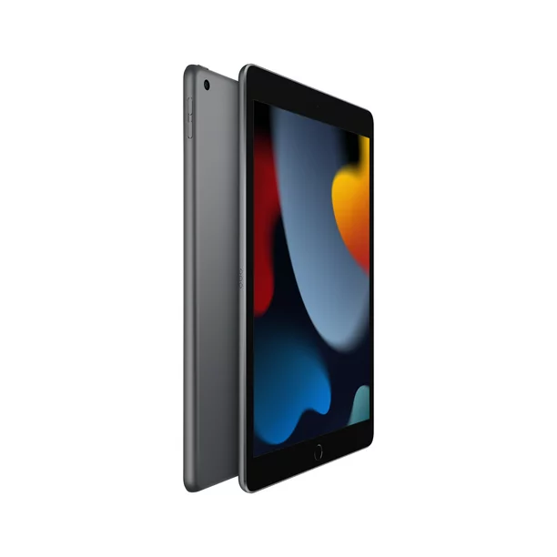
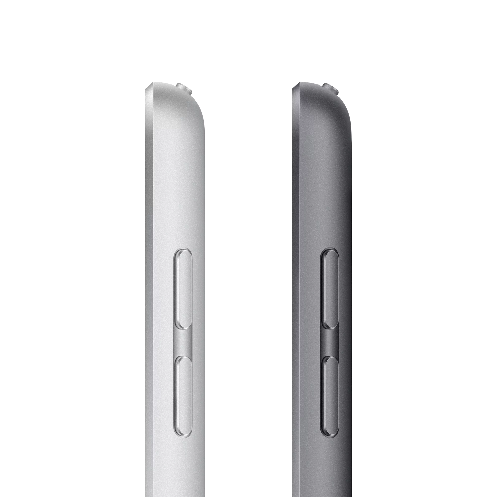

If you just want a simple tablet for a reasonable price, it’s hard to go wrong with the standard Apple iPad. Starting at $329, the basic iPad has a 10.2-inch display with good brightness (500 nits) and a relatively speedy A13 Bionic chip. It’s also the last iPad that still features an old-school Touch ID home button.

After being refreshed last year, the ninth-gen iPad got updated features including Apple Pencil support, improved cameras (in front and back) and double the base storage (64GB, up from 32GB). And just like its more expensive siblings, the standard iPad is available in a WiFi-only model or with optional 4G LTE cellular connectivity. The entry-level iPad is also the cheapest device Apple sells that gives you access to the App Store, which makes it a good multimedia device and a handy way of managing your media library across your other Apple devices at an affordable price.